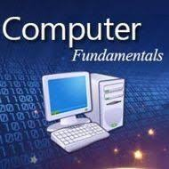

This course is an introduction to the fundamentals of Computer Science that will provide students with a foundation for future courses in Computer Science. The course is a broad survey of the discipline through topics that allow students to understand the capabilities of computer systems in terms of: the computer architecture; operating systems and computer networks; software and software development; data organization and visualization; and the potential of computing machines.